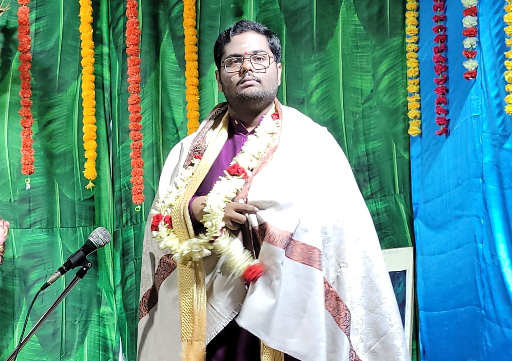

 Ishaan Saripalli (Saripalli Harshith Ishaan - Īshāna Şarma) is a sophomore at GITAM University's Visakhapatnam Campus and pursuing his bachelor degree in Computer Science and Engineering. He's not just a CS student, but also an Indology researcher. His areas of research are Indian culture, philosophy (Advaita Vedanta), Nada Brahmopasana - Mostly in the Raganga Sampradaya of Sri Venkatamakhi followed by Sri Muthuswami Dikshitar (one of the Sangeetha Trayam).
He started learning Carnatic Music at the age of 9 (2014) under the guidance of Smt. Vajjala Kameswari garu. He's inspired by the Vedanta, Mantra, Yantra and Upasana Rahasyas embedded by Sri Muthuswami Dikshitar in his kritis. He focused on Navavarana Krithis as a part of research on Sri Vidya. Later, he also focused on the relation between Swaram-Ragam-Mantram-Devata-Shastram-Anushtanam.
He discerned that his contemporaries were largely unaware of the profound intricacies of Indian culture and philosophy. Furthermore, he harbored a deep-seated aspiration to safeguard his cultural heritage by disseminating its profound significance to a broader audience. Consequently, he embarked on a journey to propagate his insights on Vedic philosophy and the richness of Indian culture through the creation and sharing of educational videos on YouTube.